← Alle News der Abteilung Wandern

+++ Ein Dankeschön an alle Wanderer +++
Als erster Sportverein überhaupt hat der 1. SC 1911 Heiligenstadt die Ehre übernommen, den Deutschen Wandertag auszurichten. Dies zeigt, wie innovativ und zukunftsweisend die Wanderabteilung des Vereins agiert.
Ein besonderer Höhepunkt war der Empfang der Wimpelgruppe des Schwäbischen Albvereins e.V. aus Fellbach im Remstal. An unserem geographischen Mittelpunkt Deutschlands wurden die Wanderfreunde herzlich von der Wanderabteilung des Vereins empfangen. Gemeinsam begleitete man die Gäste nach Heiligenstadt, und dieser symbolische Schulterschluss zwischen Tradition und Zukunft bleibt vielen in Erinnerung.
Die Abteilung Wandern glänzte im Laufe des 122. Deutschen Wandertages nicht nur mit einer großen Teilnehmerzahl bei den verschiedenen Wandertouren, sondern auch durch eine aktive Mitgestaltung der Versorgung. Vom 19. bis 22. September 2024 wurde im Heinrich-Heine-Park ein breites Angebot bereitgestellt – dank der tatkräftigen Unterstützung verschiedener Abteilungen des Vereins. Zum Abschluss dieses Großereignisses präsentierten sich die Wanderer des 1. SC 1911 Heiligenstadt stolz und geschlossen am Ende des Festumzuges und zeigten damit, dass Gemeinschaft und Engagement in diesem Verein gelebte Werte sind.
Was die Wanderabteilung besonders auszeichnet, ist nicht nur ihre sportliche Aktivität, sondern auch der soziale Zusammenhalt, den sie in den Vordergrund stellt. Gemeinsame Unternehmungen, die über das Wandern hinausgehen, stärken das Gemeinschaftsgefühl und machen den Verein zu einem wichtigen sozialen Anker.
Der 1. SC 1911 Heiligenstadt möchte an dieser Stelle ein herzliches Dankeschön aussprechen. Danke an alle Wanderer, die mit ihrem Einsatz, ihrer Freude und ihrer Gemeinschaft diesen Weg möglich gemacht haben. Diese großartige Entwicklung zeigt, wie stark ein Verein sein kann, wenn Engagement und Leidenschaft aufeinandertreffen.
Vielen Dank an die Stadt Heilbad Heiligenstadt, dem HVE Eichsfeld, dem Deutschen Wanderverband und dem Naturpark Eichsfeld-Hainich-Werratal für all das, was gemeinsam erreicht wurde – und auf viele weitere unvergessliche Wanderungen!
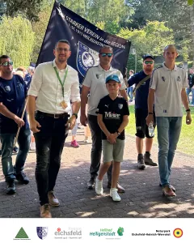
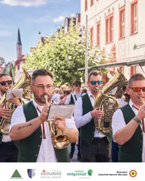
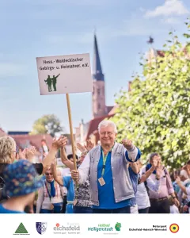
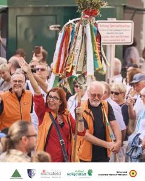
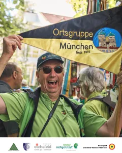
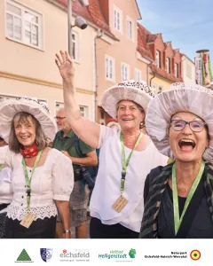
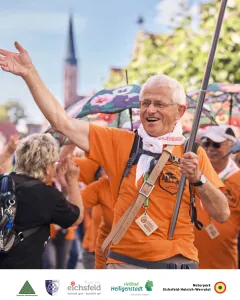
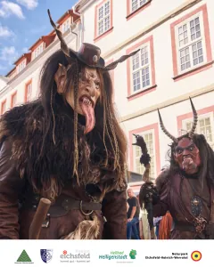
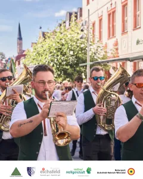
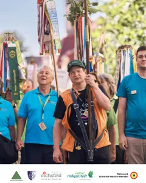
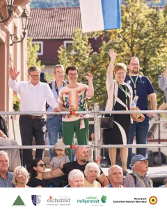
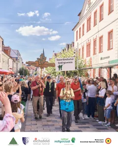
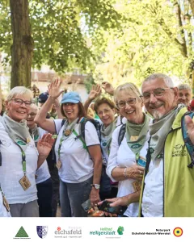
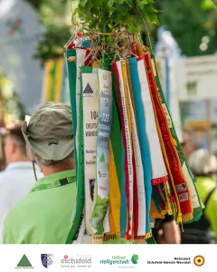